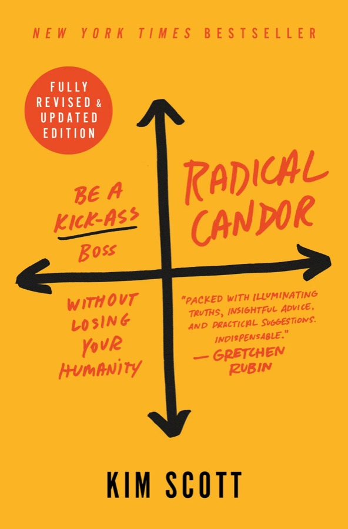

Radical Candor is Kim Scott's management handbook, drawn from her years leading teams at Google and Apple and running her own startup. Her argument is that most workplace dysfunction starts with bosses who can't, or won't, tell people the truth, and that the usual advice ("be nice" or "be tough") gets the problem wrong. The real axes are how much you care about the person and how willing you are to challenge them.
Those two dimensions produce four quadrants. Radical Candor sits where both are high. The three ways of failing are Ruinous Empathy (caring but not challenging), Obnoxious Aggression (challenging but not caring), and Manipulative Insincerity (doing neither). The book is built around helping you recognise which one you slip into, and why.
The fully revised and updated edition, as I read its structure, keeps the core of the 2017 original (a four-chapter philosophy half and a four-chapter tools half) and adds a new preface, a "Radical Candor on Radical Candor" section, an afterword on rolling the approach out across an organisation, and a bonus chapter on performance reviews.
High care, low challenge. Nice, but you withhold what the person needs to hear.
High care, high challenge. Kind, clear, specific, sincere guidance.
Low care, low challenge. Fake praise, back-stabbing, politics.
Low care, high challenge. Blunt, harsh, front-stabbing criticism.
New to this edition. Scott looks back at how the original landed in the world: widely adopted, but also frequently misread. The preface sets up the revision's purpose, which is to protect the idea from being used as cover for bad behaviour and to sharpen what the framework actually asks of people.
A short, self-referential section where Scott turns the framework on itself: what she has learned from watching people use it, where it has helped, and where it has been twisted. It is the revised edition's clearest statement that the two dimensions have to stay together, and that "challenge directly" is never a licence to skip "care personally."
It also nudges the reader to think about context: how power, culture, and personal background change how directness is received.
Scott opens with the case for why bosses matter. Bad bosses make work miserable; good ones are rare because nobody is trained to be one. She draws on her own career (a startup she helped run, then Google, then Apple) and on the feedback moments that changed her, most memorably the early Google conversation in which a senior leader told her bluntly how a verbal habit was undermining her, and then made sure it landed.
She introduces the three responsibilities of a boss that shape the rest of the book (guidance, team, results), built on a foundation of trusting relationships, and previews the two-dimension idea that becomes the quadrant model.
A reader's guide. The first half (philosophy) explains the thinking, and the second half (tools and techniques) turns that into practices you can try on Monday. Scott invites readers to treat the book as something to experiment with rather than absorb passively.
The foundation of the whole book and the home of the four-quadrant framework. Scott defines the two axes: Care Personally (genuinely caring about the people who work for you as human beings) and Challenge Directly (telling them what you really think, including when it's hard to hear). Radical Candor is both at once.
She then walks through each failure mode, with stories: Ruinous Empathy (care without challenge), Obnoxious Aggression (challenge without care), and Manipulative Insincerity (neither). The chapter stresses that relationships come first. People can only hear hard feedback from someone they trust, and trust is built by showing up as a real person, not a "work persona."
This chapter covers the first of the boss's three responsibilities: guidance, meaning praise and criticism that helps people do better work. Scott's structure is a sequence: get guidance (ask for criticism of yourself first), give guidance (praise and criticism that are kind, clear, specific, and sincere), and encourage guidance (build a team culture where everyone does this for everyone).
The "get it first" move is the key behavioural shift. If you want your team to be candid with you, you go first, you ask, you sit through the discomfort, and you visibly act on what you hear. She also lays out the principles for delivering feedback well: be humble, be helpful, do it immediately, do it in person where you can, praise in public and criticise in private, and don't make it about the person's character.
The second responsibility is building a cohesive team of people who are actually in the right roles. Scott's answer is to learn what motivates each person, then manage their growth trajectory deliberately. She introduces a framework that plots performance against growth: Rock Stars are steady, high performers on a gradual growth trajectory who love and anchor their roles, while Superstars are on a steep growth trajectory and need new challenges and opportunities to stay engaged.
A central warning: bosses over-invest in Superstars and quietly neglect Rock Stars, or, worse, push Rock Stars to "advance" when they're happiest and most valuable where they are. The way to avoid guessing is to talk, and she proposes conversations that explore a person's life story, dreams, and a concrete plan for the next stretch of their career.
The third responsibility is getting stuff done, and doing it with the team rather than over it. Scott presents the Get Stuff Done (GSD) wheel, a repeating cycle: Listen, Clarify, Debate, Decide, Persuade, Execute, Learn. The idea is to give people room to have a real say before a decision is made, then align and move fast afterwards.
She treats the boss as the person who keeps the wheel turning: making sure ideas get heard, that disagreement is surfaced early rather than after the fact, and that decisions get made and communicated rather than hovering in limbo. This chapter links the philosophy back to the quadrants, because a Radically Candid team debates openly, and an insincere or aggressive one doesn't.
Practical ways to build the trust Chapter 1 says everything depends on. The workhorse tool is the one-on-one: a regular meeting that belongs to the direct report, where they set the agenda and the boss mainly listens. Scott discusses how to run these so they build relationship and surface problems, rather than becoming status updates.
The chapter also gives approaches for asking for feedback about yourself in a way that actually gets a real answer, and for staying close to the people you manage without crossing professional lines.
The detailed mechanics of Chapter 2: how to actually word praise and criticism, how to time them, and how to keep them from collapsing into one of the three failure quadrants. Scott discusses specific, sincere praise (so people know what to repeat), and criticism delivered promptly and kindly.
She also addresses the emotional side: what to do when someone gets upset or defensive, why reacting emotionally doesn't mean you were wrong to speak up, and how to stay in the conversation instead of retreating into soft, vague language.
This chapter turns Growth Management into practice. It covers how to avoid boredom (Rock Stars stuck on a treadmill, Superstars with nowhere to go) and burnout, and how to make decisions about hiring, promotion, and, where needed, letting someone go.
Scott's thread here is that Ruinous Empathy shows up most painfully in people decisions: tolerating poor fit for too long, or promoting the wrong person to avoid a hard conversation. Handling these moments with care and clarity is, in her view, kinder than letting problems fester.
The operational counterpart to Chapter 4. Scott describes a rhythm of meetings that supports the GSD wheel: one-on-ones, regular staff meetings, dedicated "big debate" and "big decision" sessions, quick updates, and protected time to think. The point is to separate debating from deciding from informing, so each gets the right kind of room.
It also deals with the pacing of work, making sure speed doesn't come at the cost of the quality of conversations that make teams effective.
A short send-off aimed at helping readers turn the book into behaviour. The practical spirit is to start small: pick one relationship, one habit, one conversation, rather than trying to overhaul everything at once. Asking for feedback about yourself is the natural first move.
New in this edition. Where the main text is about an individual boss, the afterword is about an organisation: how to introduce a shared language of Radical Candor across a team or company without it feeling like a mandate. The underlying lesson is that culture change begins with leaders modelling the behaviour, not with a training programme or a poster on the wall.
New in this edition. Applies the framework to the formal review. The central principle is that nothing in a review should surprise the person, because guidance has been flowing all year. Where reviews go wrong, it's usually because the manager was Ruinously Empathic through the year and tries to compensate in one painful hour, or because the process becomes a box-ticking exercise disconnected from growth.
This is the heart of the book. Two dials, Care Personally (vertical) and Challenge Directly (horizontal), produce four ways of showing up. Below, each quadrant gets the same treatment: what it is, what it looks like, why people slip into it, how it feels to receive, what it costs, what it sounds like, and how to climb out. The sample dialogue and scenarios are my own illustrations in the spirit of the book, not quotations from it.
Radical Candor is the combination of two things that most people treat as opposites. Scott's insight is that they are not a trade-off. You do not need to be a little nice and a little tough; you need to be fully invested in the person and fully honest with them at the same time. Praise and criticism both count: it is as much about telling someone precisely what they did well as about telling them where they missed.
Scott gives a handful of principles for making guidance land as Radical Candor rather than slipping into a failure quadrant:
It takes emotional courage on both dials at once. Care without courage becomes Ruinous Empathy; courage without care becomes Obnoxious Aggression; and when you feel neither, you slide into Manipulative Insincerity. Power gaps make it harder still: employees rarely tell the boss the truth unless the boss has actively made it safe, which is why Scott insists the boss goes first by asking for criticism.
Ruinous Empathy is the failure of the good-hearted. You genuinely like and care about the person, but in an effort to spare their feelings (and your own discomfort) you soften, delay, or skip the hard message. It feels kind in the moment, which is exactly why it is so common: nothing about it feels like a mistake. Scott's argument is that this is where most bosses go wrong most of the time, and that the "ruin" in the name is literal. The person's growth is ruined, the team's standards are ruined, and eventually the relationship is ruined too.
The person usually doesn't know there's a problem, because the signals were muffled. They carry on, then get blindsided: a poor review that "came out of nowhere," being passed over, or in the worst case losing the job. Strong performers feel unchallenged and bored; weaker ones feel secure until they aren't. Colleagues notice the inconsistency and resent it. And when the truth finally arrives, it often arrives all at once and angrier than it would have been if delivered early.
Obnoxious Aggression is Challenge Directly with the care removed. The boss does say what they think, often bluntly and sometimes brutally, but there's no sign that they value the person on the receiving end. It's the quadrant most people picture when they hear "candid," and it is where "brutal honesty" lives. Scott's point is that this is where the drama is, but not where most of the mistakes are. Its appeal is that at least people know where they stand. Its cost is that the guidance rarely lands, and people stop telling you anything.
Defensiveness and shutdown. When people feel attacked, their attention goes to protecting themselves, not to the content of the message. Some fight back; many go quiet. People start hiding mistakes, avoiding the boss, and filtering what they report upward. Those with less power, or who've experienced bias, can absorb the harshest version of it. Over time the boss loses the very information they'd need to do their job, and the "honest" environment becomes less honest than before.
Manipulative Insincerity is the quadrant Scott treats as the worst. Where the other failures at least involve a real impulse (care in one case, honesty in the other), this one involves neither: the person is saying what's convenient or advantageous, not what they believe, and often has little genuine concern for the person they're talking to. The signature is a gap between what's said to your face and what's said elsewhere. It's the "back-stab" to Obnoxious Aggression's "front-stab."
Confusion and mistrust. Nobody can tell what the person really thinks, so everyone starts guessing, reading between the lines, and protecting themselves. When people discover the gap between the face and the back, the reaction is often stronger than for either of the other failures, because the betrayal is of the relationship itself. The environment turns political, and people begin to behave the same way.
| Radical Candor | Ruinous Empathy | Obnoxious Aggression | Manipulative Insincerity | |
|---|---|---|---|---|
| Care / Challenge | High / High | High / Low | Low / High | Low / Low |
| Nickname | Kind, clear, specific, sincere | "Nice" but withholding | Front-stab | Back-stab |
| Praise looks like | Specific and sincere: "here's what worked and why" | Vague or inflated: "great job!" | Rare, grudging, or backhanded | Flattery, or false praise to your face |
| Criticism looks like | Timely, specific, kind, about the work | Withheld, softened to nothing, or delayed | Harsh, public, personal | Said behind your back, or passive-aggressive |
| Feels like | "They're on my side" | "I think I'm fine…?" | "I'm under attack" | "I can't tell what they think" |
| Typical line | "I'm telling you because I think you can be great." | "It's fine, don't worry about it." | "Don't take this personally, but this is garbage." | "Love it!" (then the opposite elsewhere) |
| Main cost | Discomfort in the moment | Stalled growth; blindsiding | Fear; lost information; attrition | Collapse of trust |
| The antidote | Keep going; stay humble | Add challenge | Add care, not silence | Care first, then be honest in person |
Two points from Scott's framing are worth holding onto. First, Ruinous Empathy is the most common failure; Obnoxious Aggression gets the attention because it's loud. Second, Manipulative Insincerity is the most corrosive, because its damage is hidden and spreads quietly.
Slide the two dials for a specific relationship or a recent conversation and see which quadrant you land in. Anything past the midline on both counts is Radical Candor, but the point is to notice which way you lean.
Six quick calls. Tap your answer.
The practical machinery of the book, gathered in one place. Frameworks are described from the book's structure; the practice plan at the bottom is my own suggestion.
Plot each person by performance and by growth trajectory. Different people want different things from their careers, and a good boss manages to that.
The warning: don't over-invest in Superstars while neglecting Rock Stars, and don't push Rock Stars toward promotion they don't want.
The loop repeats. Radical Candor is what makes the Debate step honest instead of political.
Be a Kick-Ass Boss Without Losing Your Humanity.
Care Personally. Challenge Directly.
Ruinous Empathy.
Obnoxious Aggression.
Manipulative Insincerity.
Get Stuff Done.
Paraphrases, not direct quotes.
Withholding the truth to be nice is not kind.
If you want candor, go first and ask for it.
Don't promote your Rock Stars out of the role they love.
Debate openly, decide clearly, then commit together.
A review should hold no surprises.
Being nice isn't the same as being kind. The most common way bosses fail their people isn't cruelty; it's silence delivered with a smile. Radical Candor is the discipline of caring enough to say the true thing, and of building the relationship that makes it possible to hear.
Radical Candor earns its place as a management classic because it gives people a map for a conversation most dread. Its four quadrants let you name what you're doing, and what the other person is experiencing, in plain terms.
Take the framework, ask for criticism first, and watch which quadrant you slip into under pressure. Leave the slogan behind if it tempts you toward bluntness: the book's whole point is that candor without care is just another way of failing.